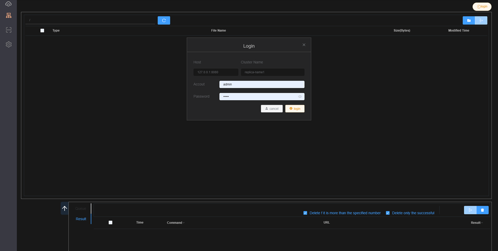
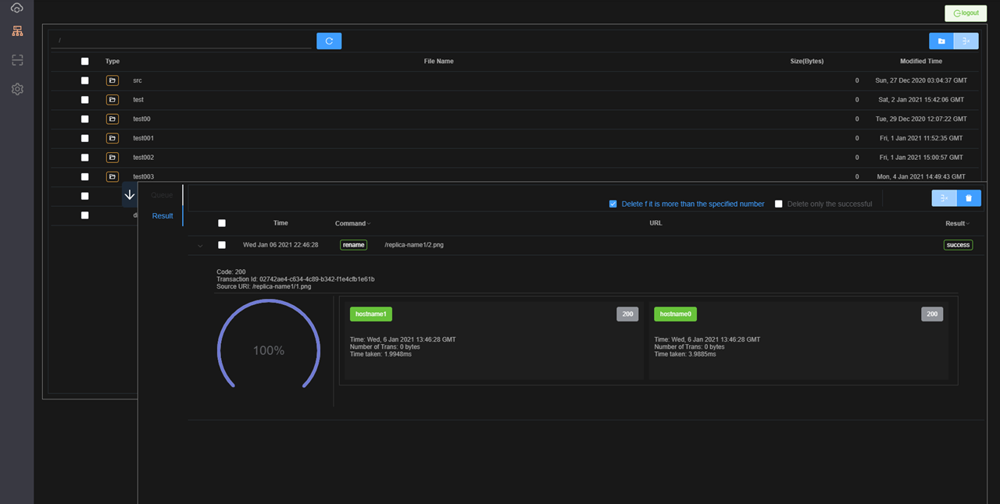
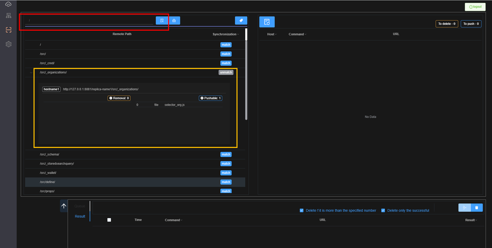
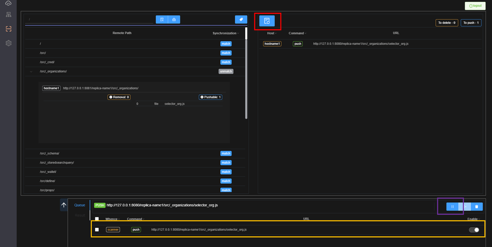
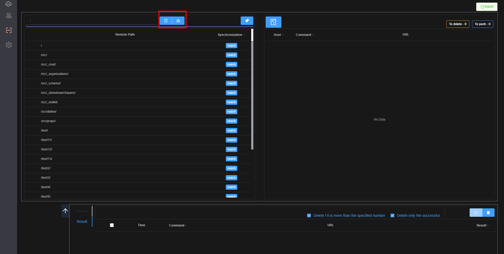
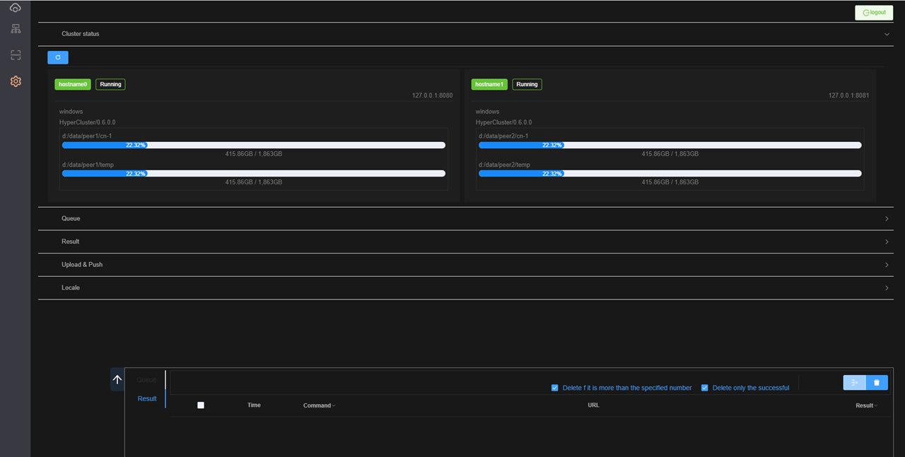

Explorer
Version 0.6.X.X Explorer 안내서.
로그인

동기화 결과
탐색기화면에 드래그앤 드랍으로 파일을 동기화 할 수 있습니다.
업로드가 완료되는 즉시 cluster에 연결되어 있는 모든 peer들은 동기화가 완료 됩니다.

폴더 또는 파일 비교분석
탐색기화면에서 폴더 또는 파일에 마우스 우클릭으로 Scan을 클릭하거나 아래 그림처럼 빨간사각형에 폴더 또는 파일명을 입력합니다. 그리고 빨간색 사각형 안의 버튼을 클릭합니다.
그러면 leader peer를 기준으로 빨강색에서 입력한 값을 cluster에 연결되어 있는 모든 peer들을 대상으로 비교분석합니다.

비교분석 결과
아래 그림은 비교분석 결과이며 하나의 파일이 누락되어 있거나 leader peer의 파일과 다르다는 것을 알 수 있습니다.
빨간색 사각형의 버튼을 눌러 분석결과를 자세히 확인 할 수 있습니다

대기열 추가 및 동기화
분석결과를 확인 하였으니 동기화를 하도록 합니다. 빨간색 사각형의 버튼을 클릭하여 대기열에 추가 한후 보라색 버튼을 클릭하여 동기화를 합니다 
다시 폴더 또는 파일 비교분석
동기화가 되었는지 결과는 결과화면으로 확인을 하면 되지만 scan을 이용하여 전체적인 동기화 상태를 확인하여도 됩니다.
아래 그림처럼 빨강색 사각형의 우측 버튼을 클릭하여 리스트를 지운 후 좌측의 버튼을 클릭하여 다시 비교분석을 합니다.
결과는 동기화가 100% 일치한 상태로 나왔습니다.

설정
설정화면에서 Cluster의 상태를 확인 할 수 있습니다. 